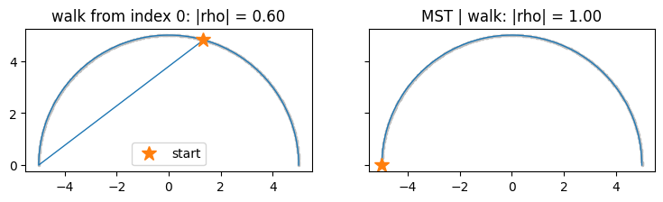

Chain orderers#
This guide shows how to run orderers in sequence, so that each stage starts from the previous stage’s ordering.
Chain with |#
Join orderers with |. Each stage receives the previous stage’s result as init.
A stage that can use a prior ordering does, and one that cannot ignores it.
import jax.numpy as jnp
import phasecurvefit as pcf
ang = jnp.linspace(0.0, jnp.pi, 60)
pos = {"x": 5.0 * jnp.cos(ang), "y": 5.0 * jnp.sin(ang)}
vel = {"x": -jnp.sin(ang), "y": jnp.cos(ang)}
chain = pcf.orderers.MSTOrderer(k=8, jump_cap=3.0) | pcf.orderers.LocalFlowOrderer()
result = pcf.order(pos, vel, chain)
assert int(result.n_visited) == 60
| builds a ChainOrderer and flattens it, so
a | b | c is one chain of three stages. The explicit form is the same:
chain = pcf.orderers.ChainOrderer(
pcf.orderers.MSTOrderer(k=8, jump_cap=3.0),
pcf.orderers.LocalFlowOrderer(),
)
assert len(chain.stages) == 2
A custom orderer written without an init parameter can lead a chain, but raises
TypeError if it is placed after another stage, rather than silently dropping the
ordering it was handed.
Tune the default pipeline#
pcf.order(pos, vel) with no orderer runs
default_pipeline(), which is
MSTOrderer(...) | SOMOrderer(...). You can call it directly, and any
SOMOrderer keyword passes through to it:
result = pcf.orderers.default_pipeline(pos, vel, n_prototypes=12)
assert int(result.n_visited) == 60
assert result.gamma_range == (-1.0, 1.0)
It falls back to the MST alone when the MST visited fewer samples than
n_prototypes (15 by default), instead of raising, and it cannot run under jit or
vmap. Its MST stage uses different settings from MSTOrderer()’s defaults so that
it works on any data without tuning (The MST backbone). A gap in a stream wider than the neighbours reach does not lose either side:
t = jnp.concatenate([jnp.linspace(0.0, 1.0, 60), jnp.linspace(1.2, 2.2, 60)])
gappy = {"x": t, "y": jnp.zeros(120)}
flow = {"x": jnp.ones(120), "y": jnp.zeros(120)}
assert int(pcf.order(gappy, flow).n_visited) == 120
To tune the MST stage, for example a finite jump_cap, velocity-aware edges, or
outlier clipping with edge_clip_sigma, build the chain yourself and pass it to
pcf.order:
chain = pcf.orderers.MSTOrderer(k=8, jump_cap=2.0, edge_clip_sigma=3.0) | (
pcf.orderers.SOMOrderer(n_prototypes=12)
)
result = pcf.order(pos, vel, chain)
Let the MST find the walk’s start point#
The local-flow walk has to start at an end of the curve. Chained after an
MSTOrderer, it starts from the first sample of the
MST ordering, which is an end. On a shuffled 400-point arc, the rank correlation
|rho| between the walk’s order and the true order goes from about 0.6 walking from
index 0 to 1.00 walking from the MST’s end:
import jax
import matplotlib.pyplot as plt
import numpy as np
ang = jax.random.permutation(jax.random.key(0), jnp.linspace(0.0, jnp.pi, 400))
arc = {"x": 5.0 * jnp.cos(ang), "y": 5.0 * jnp.sin(ang)}
arc_vel = {"x": -jnp.sin(ang), "y": jnp.cos(ang)}
walk = pcf.orderers.LocalFlowOrderer(metric_scale=1.0)
runs = {
"walk from index 0": walk,
"MST | walk": pcf.orderers.MSTOrderer(k=8, jump_cap=3.0) | walk,
}
fig, axs = plt.subplots(1, 2, figsize=(9, 3.2), sharey=True)
for ax, (name, orderer) in zip(axs, runs.items()):
res = pcf.order(arc, arc_vel, orderer)
rho = np.corrcoef(np.arange(400), np.asarray(ang)[res.ordering])[0, 1]
q, _ = pcf.order_w(res)
ax.plot(arc["x"], arc["y"], ".", c="0.75", ms=3)
ax.plot(q["x"], q["y"], lw=1)
ax.plot(q["x"][0], q["y"][0], "*", ms=12, label="start")
ax.set(title=f"{name}: |rho| = {abs(rho):.2f}", aspect="equal")
axs[0].legend()
assert abs(rho) > 0.999 # the chained walk recovers the order

From index 0, a random point after shuffling, the walk runs to one end and then jumps back to cover the rest. From the MST’s end it runs from one end to the other.
An explicit start_idx always wins. The default, start_idx=None, means “take the
start from init, or else start at index 0”.
Keep rejections through a chain#
Every stage is handed all of the positions and velocities; init is extra context.
So a stage does not inherit an earlier stage’s rejections unless it is written to.
A sample that the MST’s edge_clip_sigma dropped is visited again by a following
LocalFlowOrderer, which reads only its start index
from init.
SOMOrderer is different: it works on exactly the
samples the previous stage visited, so rejections stick through it. Check
n_visited on the final result when a rejection must stick.